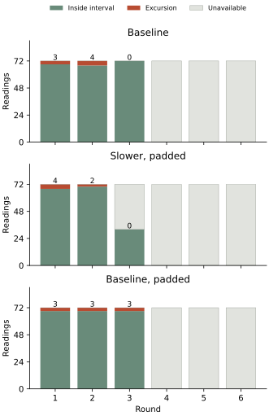
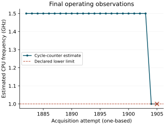

Results: acquisition stopped by the operating guard
The returned journal contains 1904 successful readings from 1905 attempts out of 3888 scheduled. Two rounds completed; the third stopped when the recorded CPU-frequency estimate fell below the declared lower limit. All three acquired mixed calibrations were accepted. The journal was finalized, and restoration and pin release reported success.
Of 432 scheduled target median decisions, 201 were correct, one was wrong and 230 were unavailable. No available median was rejected. The 608 valid target readings contain 586 values inside their frozen interval and 22 above it. The other 688 scheduled memberships are unavailable, including the failed attempt. Missing exposure remains in the declared denominators.
| Condition | Valid readings | Above interval | Medians: correct / wrong / unavailable |
|---|---|---|---|
| Baseline | 216 | 7 | 72 / 0 / 72 |
| Slower, padded | 176 | 6 | 57 / 1 / 86 |
| Baseline, padded | 216 | 9 | 72 / 0 / 72 |
The pooled excursion counts have unequal exposure and cannot establish a condition advantage. Only rounds 1 and 2 supply complete primary comparisons. Slower-minus-baseline excursion differences were +1 and −2; slower-minus-padded-baseline differences were +1 and −1. Their descriptive medians are −0.5 and 0. Neither comparison shows a consistent direction. The other four paired differences remain unavailable.

The wrong decision occurred in round 1 under slower, padded reads. Target readings 40–42 in that block were 2824, 2813, 2832, yielding median 2824. The frozen state-0 interval was 2788–2820; state 1 occupied 2823–2876. The median therefore received identity 1, with a state-0 interval margin of −4 codes. Across all conditions, the 22 raw excursions were code 2824 seven times, 2832 ten times and 2848 five times. No value was removed or used to alter a bound.
Measured result-read timing
All 1568 observed padded-read windows met the declared 8000–8400 microsecond range. The result-read timing control operated within that range on every valid padded observation recovered.
| Condition | Observed windows | Within declared range | Minimum / median / maximum |
|---|---|---|---|
| Baseline | 864 | Not padded | 2217.426 / 2230.556 / 2337.907 |
| Slower, padded | 704 | 704 | 8004.722 / 8005.241 / 8006.370 |
| Baseline, padded | 864 | 864 | 8004.944 / 8005.463 / 8006.019 |
The complete-study timing criterion was not met because the acquisition ended before all scheduled observations. This is distinct from a measured padding violation. Both available complete round comparisons qualify for timing. All 1904 available repeated result-octet pairs agreed; equality does not prove independent conversion freshness.
The architectural counter reported 54 MHz at all 3810 recorded acquisition endpoints, with no interval-ordering error. The acquisition-start-to-end span was 76.443 seconds. Trial start to the final recording section was 857.079 seconds, including journal recording. These intervals do not measure total external powered duration or the final storage flush.
Operating-frequency boundary
The last three CPU-frequency estimates were 1500005110, 1000001333 and 999992444 Hz. The final estimate is 7556 Hz below the fixed 1 GHz lower bound; the upper bound is 1.55 GHz. The approximately 1 ms cycle-counter observation measures an interval-average estimate, distinct from the 54 MHz architectural timebase.

Attempt 1905 was the 33rd target attempt in round 3's slower, padded block. Condition status 4 produced acquisition status 20 before a new voltage request or ADC access. The retained thermal code was 753, inside the declared 728–818 interval. The record does not identify a thermal, supply or firmware cause for the frequency change.
The final estimate reconstructs from 1000048 cycle increments over 54003 architectural counter ticks. This explains why the guard rejected the observation under its existing rule, but does not distinguish a change below the nominal boundary from measurement variation near it. The final recorded GPIO dwell was the original 540 ticks. Three restoration attempts were recorded, including the partial round; final restoration and pin release returned status 0. These statuses do not independently measure restored voltage.
Return integrity
Two complete read-only SD captures matched byte for byte. The preserved image SHA-256 is ce33689fe7394eb927200d84d1884b4db591dd307a85a7aa6e223011566fd144. The journal contains 19833 recorded sectors and 12871 unused reservations, with no decoding or identity issue. Its finalized guard failure provides an internal stop record.
The partition geometry, master boot record, primary and backup boot sectors, config.txt and seigr.bin remain unchanged. Both FAT copies agree. Seven non-journal sectors differ from the prepared image, in boot-volume metadata; the responsible writer is not identified. The SD was read without repair or modification.
Seven post-acquisition checks reconstruct the assessments from preserved bytes, verify the guard and incomplete comparisons, and reject corrupt journals and unmatched timing. They validate the assessment procedure; they do not add physical observations.
Implications and next question
The observed timing windows establish execution of the two padded conditions. The two complete round comparisons show no consistent excursion reduction, and slower reads retained a wrong median identity. The incomplete boot cannot qualify the full timing comparison, reliable recognition or independent analog freshness.
The next investigation should resolve the operating-frequency transition and behavior of the estimator near the 1 GHz boundary before selecting a result-read timing change. Consecutive cycle and architectural counter observations over explicitly compared window lengths could distinguish persistent frequency changes from variation in a short-window estimate. Such measurements must retain the voltage limits, zero added acquisition wait and recorded stop rule until a replacement criterion is justified. This is a proposed investigation; no new image or changed guard has been installed.
Question and rationale
The controlled-descent acquisition recovered 394 correct target medians, one wrong identity and one rejection. All first target medians were correct; the two failed medians occurred later. Its 22 raw excursions had codes 2824, 2832 or 2848. Both result-octet pairs agreed for every reading. These observations motivate examining result acquisition before changing electrical-state widths or filtering.
The question is whether changing the programmed GPIO dwell during result-register transfers changes excursions at fixed request 91. A second control retains the original dwell while matching the minimum elapsed time of the slower reads. A reduction confined to the slower transfers would support a transfer-timing association. Similar reductions in both padded conditions would instead be consistent with an elapsed-time association. No reduction, inconsistent round differences or unmatched timing would weaken these interpretations. None identifies an analog or transport cause by itself.
Acquisition protocol
One boot contains six rounds of 648 readings: 216 nominal references, 216 interleaved mixed references, then three blocks of 72 readings at request 91. The total remains 3888. Each condition contributes 432 target readings and 144 non-overlapping three-reading median decisions; the combined target denominators are 1296 readings and 432 decisions.
| Condition | Minimum GPIO dwell | Minimum successful read duration |
|---|---|---|
| Baseline (0) | 10 microseconds | No added wait |
| Slower, padded (1) | 20 microseconds | 8 milliseconds |
| Baseline, padded (2) | 10 microseconds | 8 milliseconds |
Each acquisition reads registers 0x8000 and 0x8001 twice. For the slower condition, the original GPIO minimum dwell is doubled during each complete result-register transaction. It is restored immediately afterward. Both padded conditions wait after receiving the octet until the measured call duration reaches 8 ms. A longer transfer returns without further waiting. A failed transfer restores the original dwell and returns its status without padding, another read or a retry.
Orders by round are 0,1,2; 1,2,0; 2,0,1; 0,2,1; 1,0,2; and 2,1,0. All six permutations occur once. Each condition occupies each position twice. Request 91 is reissued before every target acquisition; there is no predecessor prime or discarded initial reading.
Reference acquisition, voltage requests, ADC reset/trigger/status operations, the 1 ms pre-ADC settling interval, calibration, guard and recognition rule remain unchanged. Added wait before acquisition remains zero. Both reference sets are frozen before the target blocks; targets never alter their bounds. Timing changes apply to the result reads only. Hardware request numbers and ADC codes in this account are decimal; hexadecimal register addresses identify the existing interface.
Declared comparison
For each round and condition, count valid raw target values below or above its frozen state-0 mixed-reference interval. The primary contrasts subtract each control's count from the slower condition's count in the same round. Retain all six differences for each control, their signs and their descriptive median. Negative differences mean fewer excursions in the slower condition. Report every raw value, result octet, signed interval margin and native median decision by round, block position and condition.
The ordered counter windows end at the post-trigger status observation, first low result, first high result, second low result and second high result. A padded reading qualifies for the elapsed-time comparison only when all four successive windows are between 8000 and 8400 microseconds inclusive. This 400-microsecond tolerance is declared before acquisition. Report observed windows and all timing failures. A paired round qualifies only when both compared blocks have complete diagnostics and the padded windows meet that condition. Raw count differences remain visible when timing fails; they cannot support a matched-time interpretation.
Complete median recognition requires six accepted mixed calibrations, diagnostic integrity and 432/432 correct target medians. Single-reading membership separately requires 1296/1296 target values inside their frozen intervals. Rejection of one round's mixed calibration makes its 72 medians and 216 interval memberships unavailable; recorded values remain available for descriptive inspection. Missing or invalid observations keep their place in the denominators and make the affected raw count contrast unavailable.
Matching repeated octets is assessed independently from timing and recognition. Equal octets and conversion-status observations do not establish a distinct fresh analog conversion for each acquisition.
SEIGRASM execution and recording
The result-read operation contains 112 literal AArch64 instruction words. One entry selects the condition around the existing timed acquisition; the other controls the existing ADC register-read operation. A six-cell context supplies the original entries, GPIO context, current condition, counter-frequency address and fixed 8000-microsecond deadline. References use condition 0, and the condition is reset after each acquisition.
Schedule selector 6 directs every held-out request to 91. It changes one dispatch instruction and appends five words to the previous operation. Configuration schema 20 identifies this protocol. GPIO dwell, measured call duration and wire sampling time remain distinct quantities.
The existing boot firmware enters the SEIGRASM instruction stream. SEIGRASM then performs the PMIC transactions and records requests, readbacks, status, both result pairs, counters, references and decisions in the existing senary journal. PC image tooling places literal instruction bytes and context data without a foreign target compiler. Return assessment reconstructs the declared schedule and comparisons from preserved bytes.
Supplied-response execution checks cover GPIO transactions and dwell, deadline padding, overrun, error restoration, every request and condition order, injected excursions, rejected calibration, unmatched windows and partial journal recovery. These checks establish execution under supplied responses. The returned counter observations establish the measured call-end windows; the interpretation limits retain the distinction from wire sampling and analog conversion.
Interpretation limits
The GPIO values specify minimum transition dwell, not independently measured bus frequency. Faster or slower wire edges are not measured with an external instrument. The recorded result counters follow any padding; they do not identify the instant at which an octet was sampled on the wire. Equal call-end windows therefore do not equalize all internal sampling instants.
Orders are balanced and deterministic. Temperature, reference age, prior activity and other unmeasured behavior may vary within a boot. The first block also follows the final mixed reference, whereas subsequent blocks follow request 91; balancing distributes this position, but does not erase history. One boot provides a comparison, not recurrence or a general causal conclusion.
Control requests and ADC codes are not independently measured voltages. Firmware replacement, native multilevel computation and Hyphos-made Seigsit creation remain outside the measured claim. This investigation tests acquisition integrity as a prerequisite for interpreting later electrical-state experiments.
Run duration
One uninterrupted 26-minute powered session under the established SD workflow. The preceding run reached its final recording section after 1418 seconds. The same reading count and journal extent are retained; the scheduled padding budget is at most approximately 28 seconds, leaving about 114 seconds beyond that budget within the prescribed window. Transfer and recording durations may also vary. Returned counters determine the observed duration; this allowance is not a measured completion time.
Preparation
Preparation 01A7592FE061 passed 318 software checks without skips or source changes during validation. Its 118 validated source files are preserved. The image retains 33 instruction regions, the boot configuration, electrical parameters and journal extent unchanged. One scheduler instruction changes, five words extend its dispatch, and the result-read operation adds 112 words.
Installation verified all 4096 writes of 16 KiB and two matching complete 64 MiB readbacks while the volume remained locked. Media ejection succeeded. The pre-write backup matches the preserved preceding return. All 32704 journal reservations were empty and bound to the new identity before acquisition. The pre-acquisition protocol remains preserved with the prepared image.